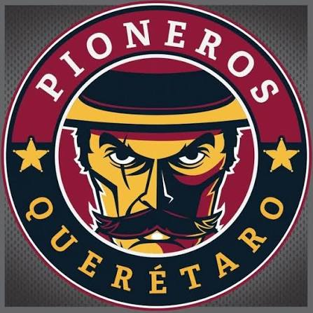
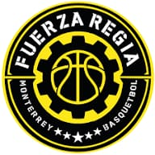
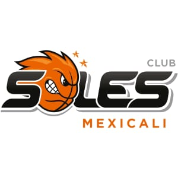

Los equipos más destacados del baloncesto nacional

Los Pioneros de Querétaro son un equipo destacado de la Liga Nacional, conocido por su compromiso con el desarrollo de jóvenes talentos y su participación competitiva en torneos nacionales. Fundado en 2009, el club ha demostrado crecimiento constante, logrando consolidarse como un referente del baloncesto mexicano. Su estilo de juego se basa en velocidad, coordinación y táctica ofensiva, combinando experiencia de veteranos con la energía de nuevos jugadores. Han destacado en torneos locales y nacionales, inspirando a aficionados y fomentando el crecimiento del baloncesto en la región.

Fuerza Regia es uno de los equipos más fuertes de la Liga Nacional, con múltiples campeonatos ganados y un equipo que combina talento local e internacional. Fundado en Monterrey, ha destacado por su estilo físico, disciplinado y táctico. Jugadores como Lorenzo Mata y Juan Toscano-Anderson han sido parte de su historia reciente, fortaleciendo la reputación del club en competencias nacionales e internacionales. Su estructura profesional y enfoque en desarrollo de talento asegura que siempre estén en la pelea por los títulos.

Los Soles de Mexicali son un equipo icónico de la Liga Nacional, reconocidos por su estilo ofensivo y disciplina táctica. Fundado en 2001, el club ha logrado múltiples campeonatos nacionales y ha formado jugadores de gran nivel que han destacado en la liga y en selecciones nacionales. Su estrategia combina velocidad, tiros precisos y defensa intensa, lo que los convierte en un equipo competitivo y respetado dentro del baloncesto mexicano. Además, su afición apasionada contribuye al ambiente único de sus partidos.